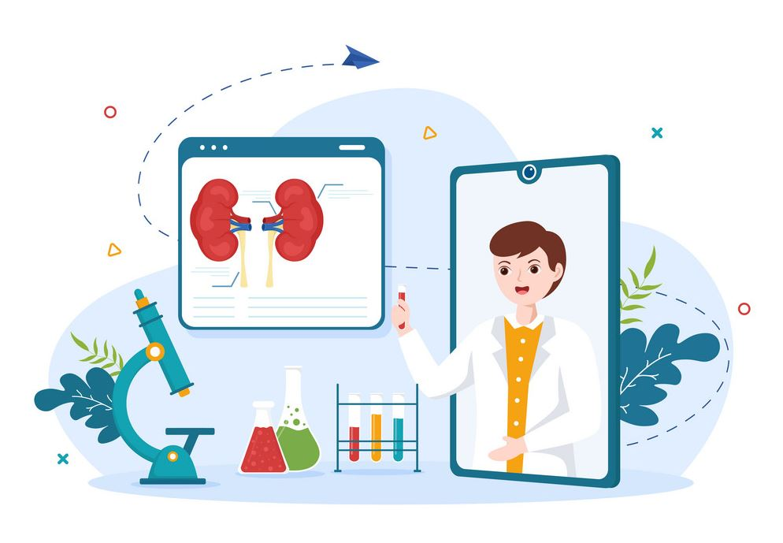
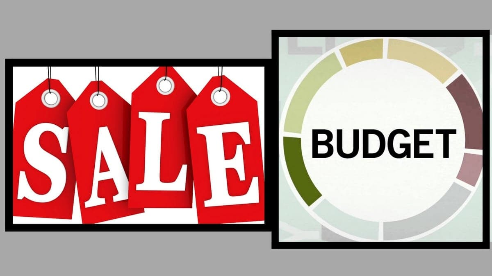

I developed a comprehensive dashboard for supervisors of parent coaching programs using SQL, Pyspark, and Python in the Databricks environment. This dashboard not only enhanced decision-making through actionable insights but also offered a real-time performance overview of their coaches. This initiative has significantly improved parent coaching program efficiency and fostering a data-driven approach for positive parenting outcomes.
I created analytics report for a mobile Healthcare Technology application using SQL and Pyspark. The report provided insights to the patients' engagement with the app over time. This report not only pinpointed areas where engagement and compliance of the app was lacking, it also provided valuable insights for the design and research team to address the existing challenges and ultimately increase the engagement of the app.

I created an aggregate patient report for a shared decision aid program aimed to help patients with Chronic Kidney Disease through structured education and behaviour science-based goal setting. This report was written using SQL and Python in the Databricks environment, and visualized using the Databricks dashboard. This report provided the program guide of an overview of the patients' progress in the shared decision-making progress.

In this project, I conducted a quantitative research on the school-to-work transition process in recent university graduates.
The data was collected by surveying a sample of 303 recent University graduates. I used Python to conduct data wrangling, EDA, hypothesis testing,
outlier detection and exemption, assumption tests, multivariate regression and mediation analyses, Post-Hoc tests, data visualization and interpretation of the results.
I built a Tableau dashboard for the using the sample sales performance of superstores data in the United States between the year 2014 to 2017.

I built an interative budget and forecast dashboard using Power BI.

Budget and sales by sales product dashboard using Power BI.

In this project, I demonstrated SQL joins, subqueries, and SQL functions for the sample employee dataset.